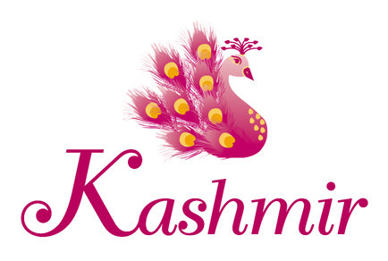
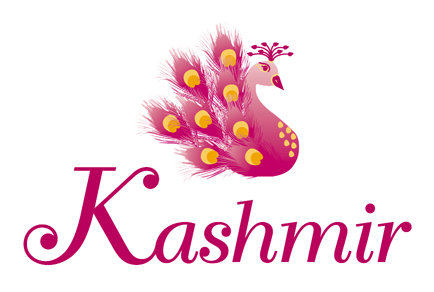

04 Days Best Of kashmirTour -
GULMARG AND PALGHAM

Day 1 - Arrival in Srinagar
Upon your arrival in Srinagar, you will be transferred to a deluxe hotel. In the afternoon, enjoy a shikara cruise on Dal Lake and visit the beautiful floating gardens. Try to spot the variety of birds that flock to these shores. Stay overnight in Srinagar.?

Day 2 - Srinagar- Pahalgam
In the morning, drive to Pahalgam. Along the way, stop by the saffron fields and the ruins of Awantipora. Visit the trekking routes in Aru and check out Betaab Valley. Stay overnight in Pahalgam.

Day 3 - Pahalgam - Srinagar
After a delicious breakfast, head back to Srinagar. Stay overnight on a houseboat on Dal Lake.
CONFIRM YOUR TOUR RIGHT HERE....

Click here to logout